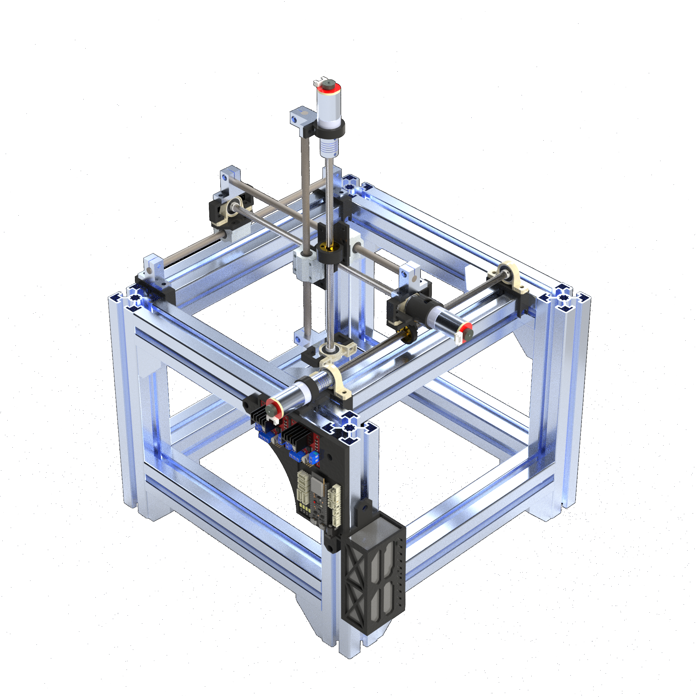
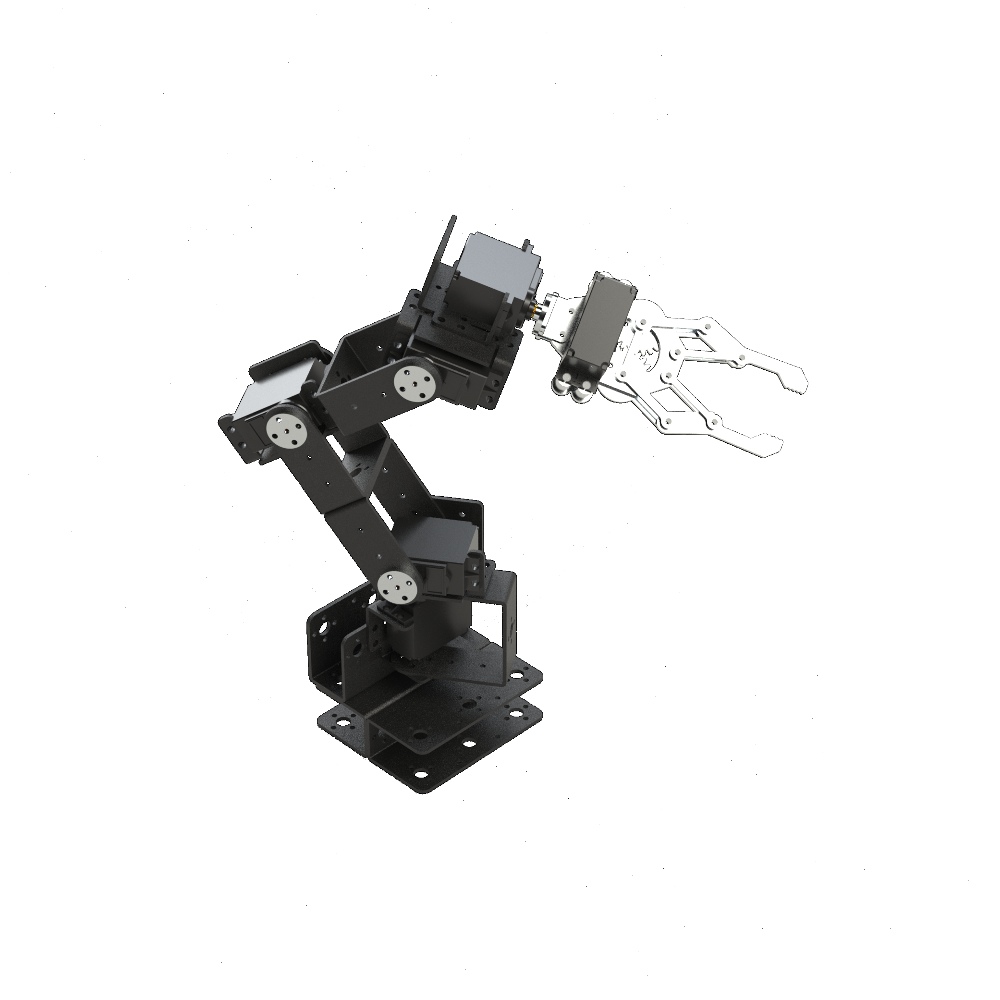

ADN KSHARP
Ingeniero Mecatrónico | Embedded Systems & Full-Stack Developer.
Sobre Mí
Próximo egresado en Ingeniería Mecatrónica con experiencia técnica enfocada en investigación, desarrollo (R&D) y el ciclo de vida del producto. Especializado en el diseño 3D/CAD, desarrollo y ensamble de PCBs e implementación de firmware. Competente en la gestión de BOMs estándares de clientes OEM y logística de muestras para validación técnica en laboratorio, con sólida capacidad para el prototipado de sistemas embebidos.
Habilidades
Lenguajes de Programación
C++
C#
Python
JavaScript
TypeScript
Bash / Zsh
Rust
HTML & CSS
Frameworks y Librerías
ROS 2
Node.js
.NET
React
React Native
Electron.js / Neutralino.js
PyQt / PySide
Gtkmm
Express.js / ngrok
Sistemas Embebidos y Firmware
Arduino CLI - IDE / PlatformIO
Flowcode
RSLogix 5, RSLogix 500
Arduino / ESP32 / MicroLogix
Protocolos de Comunicación
Communicación Serial, I2C, SPI
MQTT, HTTP, WebSocket
API REST
SSH
Diseño y Simulación
SolidWorks
KiCad / Fritzing / Livewire
Gazebo Sim / RViz
ANSYS APDL
MATLAB / Simulink
Control y Automatización
PID
Control en el espacio de estados
Fuzzy Logic
Ladder Logic
Flowcharts
Bases de Datos
MongoDB / Mongosh
SQLite / MySQL
Sistemas Eléctricos y Electrónicos
Lectura de diagramas
Diseño de circuitos
Uso de instrumentos de medición
Diseño de PCB
Interacción con sensores y actuadores
Instalaciones eléctricas
Reparación de electrodomésticos
Herramientas de Desarrollo
Windows 10 / 11
Linux (Debian, Arch, Red Hat)
Git / GitHub
Experiencia
Experiencia Profesional
DELMEX DE JUAREZ, S. DE R.L. DE C.V. (VALEO)
06/2025 – 06/2026
- Diseñé, administré y optimicé bases de datos para clientes OEM globales garantizando la integridad de los datos de ingeniería.
- Gestioné el ciclo de vida de componentes mediante solicitudes de cambio en SAP/PLM; identifiqué Números de Parte (P/Ns) a actualizar y coordiné su flujo hasta su despliegue final.
- Gestioné el flujo de dibujos técnicos, piezas y ensambles con el área de diseño mecánico, dando seguimiento con el diseñador asignado para auditar la precisión de las modificaciones.
- Desarrollé presentaciones sobre actualizaciones en tecnologías y especificaciones de componentes automotrices mediante el análisis de capturas en campo.
- Coordiné la realización de pruebas de validación y la ejecución de retrabajos por parte del área de prototipos.
- Brindé soporte técnico en planta a los departamentos de Calidad, Empaques y Procesos.
- Realicé auditorías de ayudas visuales y gestioné la logística de envios para clientes y otras plantas de la compañía.
Formación Académica
Licenciatura en Ingeniería Mecatrónica
Universidad Autónoma de Ciudad Juárez
2019 – Presente
- Especialización en desarrollo de software para robótica, sistemas embebidos y control.
- Desarrollo de tesis: "Creación de una plataforma centralizada para la gestión de proyectos de ROS 2"
Bachillerato con Carrera de Técnico en Electrónica
Centro de Bachillerato Industrial y de Servicios No. 128, Ciudad Juárez.
2016 - 2019
- Formación en fundamentos de electrónica y programación de microcontroladores.
- Diseño y desarrollo de prototipos académicos automatizados.
Información Adicional
- Idiomas: Inglés (A2)
-
Certificaciones de Competencia Laboral (CBTis 128):
- Mantenimiento de sistemas electrónicos de uso comercial y automatizados de aplicación industrial.
- Instalación y mantenimiento de sistemas electrónicos en edificios inteligentes.
- Reparación de equipos de audio y receptores de televisión HD.
Proyectos Relevantes

RQTLL: ROS2 QT LAYER FOR LOW-LEVEL OPERATIONS
Stack: ROS 2, Python, Rust, Linux, PySide, Protobuf, Bash
Entorno de Desarrollo Integrado de código abierto diseñado para optimizar el flujo de trabajo y debug de sistemas robóticos basados en ROS 2, proporcionando una interfaz gráfica y herramientas de visualización para la gestión de nodos y tópicos.

Robot Cartesiano Ciberfísico
Stack: ROS 2, Neutralino.JS, ESP32, SolidWorks
Diseño, simulación y construcción física de un sistema robótico de tres ejes primitivos (PPP) con control de posición y velocidad, utilizando ROS 2 para la comunicación entre el robot y la interfaz gráfica de usuario (GUI) desarrollada en Neutralino.JS.

Brazo Robótico Inalámbrico (5 GDL)
Stack: ESP32, Electron.JS, Express.JS, MongoDB, SolidWorks, Cinemática Directa
Modelado 3D, ensamble electromecánico y programación de un brazo robótico de 5 grados de libertad (GDL) con control de posición utilizando un ESP32 para la comunicación inalámbrica con una interfaz gráfica de usuario (GUI) desarrollada en Electron.JS.
FEM Springs App
Stack: Python, PySide, Método de Elemento Finito
Desarrollo de una interfaz gráfica para calcular deformaciones y reacciones de sistemas de resortes utilizando el método de elementos finitos (FEM), permitiendo a los usuarios ingresar parámetros del sistema y obtener la matriz de rigidez, desplazamientos y fuerzas.